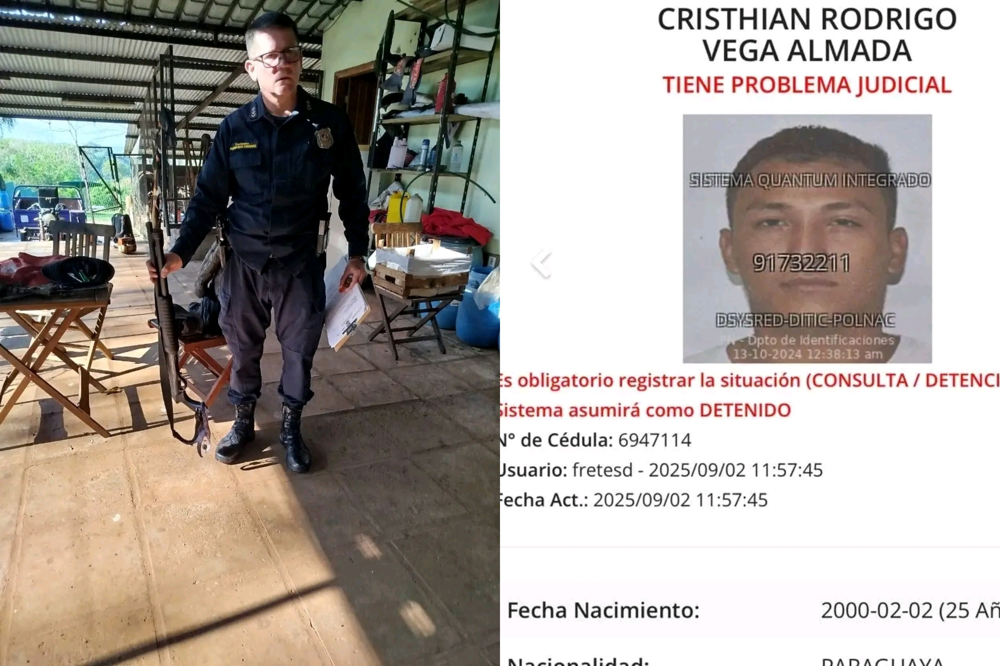

Imputan por homicidio doloso y violación de Ley de Armas a guardia de seguridad que mató a presunto ladrón
2025-09-08

De no creer...
El guardia de seguridad que disparó contra un presunto delincuente fue imputado por homicidio doloso y violación de la Ley de Armas, según confirmó el fiscal de la causa, Édgar Delgado.
De acuerdo con la versión del representante del Ministerio Público, "se está construyendo un caso de dolo eventual porque el disparo lo realizó hacia la humanidad de la víctima. La distancia no representaba ningún peligro presente para el guardia porque la víctima no contaba con ningún tipo de arma. El otro tenía otro medio para repeler el peligro", explicó Delgado.
La discusión vuelve a poner en el centro de la agenda el eterno debate: ¿tienen más derechos los bandidos que la gente trabajadora que solo quiere defenderse? La ciudadanía reclama leyes más equilibradas que protejan a quienes actúan en legítima defensa, al tiempo que exigen mayor firmeza contra la delincuencia que día a día afecta a comerciantes, trabajadores y familias.
Intendenta de CDE destituye a funcionario por violencia en hospital de Franco
2025-09-05
La intendenta interina de Ciudad del Este, María Portillo, destituyó al funcionario Eduardo Joel Ríos Dávalos tras un violento incidente en el Hospital Distrital de Presidente Franco.
La intendenta interina de Ciudad del Este, María Portillo, destituyó de manera inmediata al funcionario municipal Eduardo Joel Ríos Dávalos, tras protagonizar un violento incidente en el Hospital Distrital de Presidente Franco.
Según la denuncia, Ríos Dávalos amenazó de muerte y profirió graves insultos contra un guardia de seguridad del hospital, llegando incluso a decir que atentaría contra su familia. La escena fue registrada en video y generó repudio ciudadano.
Portillo expresó que en su administración no se tolerarán conductas violentas y pidió a las instituciones judiciales sancionar con la mayor severidad al exfuncionario.
Ríos Dávalos, de 35 años, ex candidato a concejal en Hernandarias, fue abucheado por otras personas que aguardaban en el lugar al presionar al guardia para que lo comunique con el director del hospital.
Repudio a agresión contra guardia en el Hospital Distrital de Presidente Franco
2025-09-03
SINTRASPAP repudia la agresión al guardia del Hospital Distrital de Presidente Franco e insta a sancionar al responsable.
La salud es un derecho, pero no puede reclamarse con violencia ni a costa de quienes cumplen con su labor diaria. Felicitamos al compañero por su templanza y profesionalismo.
Instamos a las autoridades a identificar al agresor y aplicar las sanciones correspondientes. Toda nuestra solidaridad con el guardia y con quienes trabajan cuidando a la ciudadanía.
Reconocimiento al SINTRASPAP
2025-02-15
El Sindicato Nacional de Trabajadores de la Seguridad Privada y Afines del Paraguay (SINTRASPAP) obtuvo el reconocimiento oficial del Ministerio de Trabajo, Empleo y Seguridad Social.
Tras mucho esfuerzo y perseverancia, y pese a varios intentos de las empresas explotadoras por frenar nuestra conformación, hemos logrado obtener la personería gremial, reconocimiento definitivo otorgado por el Ministerio de Trabajo, Empleo y Seguridad Social.
Este logro histórico nos otorga la representación legal de nuestros afiliados y nos fortalece para seguir luchando por un sector más justo, digno y respetado para todos los trabajadores de la seguridad privada.
Institucional
Somos el Sindicato Nacional de Trabajadores de la Seguridad Privada y Afines del Paraguay (SINTRASPAP), fundado el 17 de marzo de 2024 y reconocido por el Ministerio de Trabajo, Empleo y Seguridad Social con la Personería Gremial N.º 24/2024.
Tenemos jurisdicción en todo el territorio nacional para representar a nuestros afiliados ante las patronales y autoridades del Estado. Defendemos el trabajo digno, promovemos la capacitación constante y velamos por el cumplimiento de los derechos laborales, garantizando condiciones seguras y justas para toda la familia trabajadora de la seguridad privada.
Velar por los derechos de los trabajadores de la seguridad privada, fomentar su capacitación constante y garantizar entornos laborales seguros, dignos y justos.
Visión
Un sector formalizado, con empleo digno y condiciones justas para toda la familia trabajadora de seguridad privada.